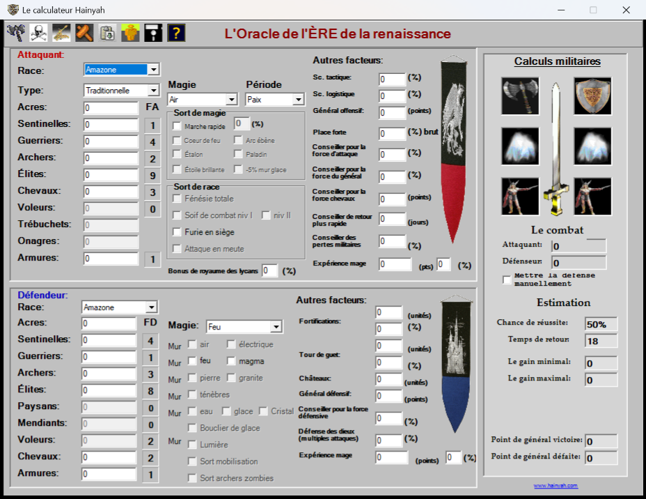
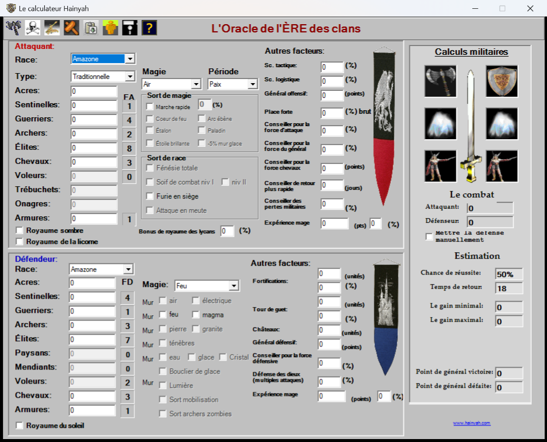

L'Oracle
L'Oracle, « le calculateur Hainyah », était le logiciel que le jeu offrait à ses abonnés : 5 $ canadiens, 4 euros ou 5 $ américains pour 200 jours, avec l'inscription privilégiée. On y collait sa boule de cristal ou sa page militaire, et il estimait une attaque avant qu'on la lance.
Ce qu'il calcule
Pour l'attaquant et le défenseur — race, acres, unités, magie, sorts, conseillers, fortifications — il donne la chance de réussite, le temps de retour, le gain minimal et le gain maximal en acres, et les pertes de chaque côté. Un second écran planifie les bâtiments d'une seigneurie selon ses acres.
Chaque version porte les chiffres de l'ère pour laquelle elle a été compilée, et ce sont des estimations : le serveur du jeu avait le dernier mot.
Les deux versions retrouvées
Deux programmes différents ont survécu. Chaque archive est reproduite telle quelle, octet pour octet : c'est ce que le lien de téléchargement du jeu remettait aux abonnés à l'époque.
L'Ère de la renaissance — février 2009

LOracle-2009-02.zip — 328 ko. L'Oracle.exe du 2 février 2009
(version 1.0.3320.33000), avec son guide d'intallation.txt d'origine.
L'Ère des clans — novembre 2009

LOracle-2009-11.zip — 318 ko. L'Oracle.exe du 23 novembre 2009
(version 1.0.3614.20458), seul.
Le faire fonctionner
- Windows seulement. Les deux versions demandent le .NET Framework 3.5 (qui comprend la version 2.0). Sous Windows 10 ou 11, s'il manque, Windows propose de l'installer au premier lancement.
- Elles ne demandent aucune activation et fonctionnent hors ligne.
- Les programmes ne sont pas signés : Windows affichera probablement un avertissement (« Informations complémentaires », puis « Exécuter quand même »).
SHA-256
LOracle-2009-02.zip : abedab6618f85af070b3fe0fc9b6fd14d3af0151de4a828a6ecd68325e6ee22a
LOracle-2009-11.zip : 6f99dc4a78d4f716be47856af16611a304203876a788e57699d01f2e9218e64c